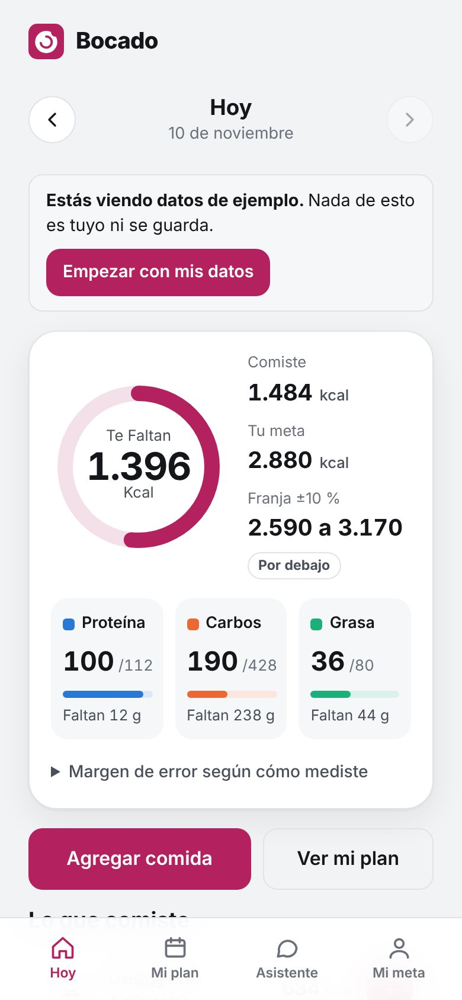
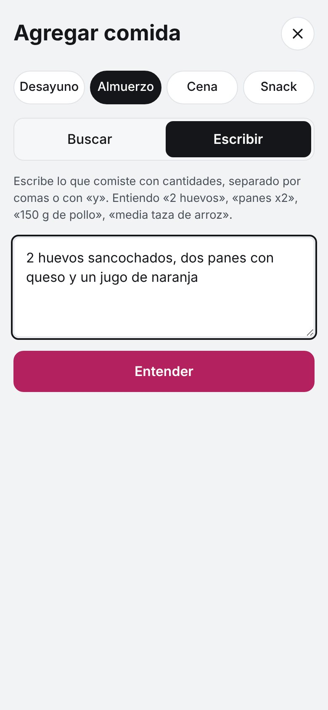
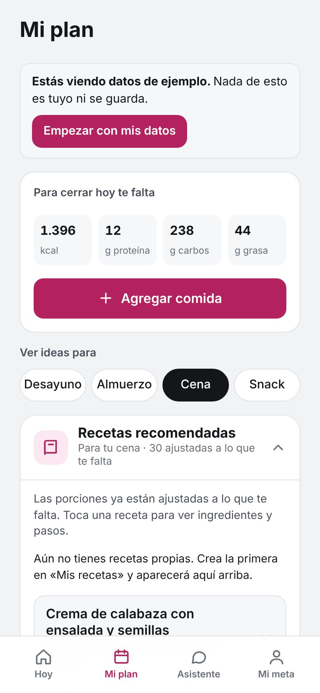
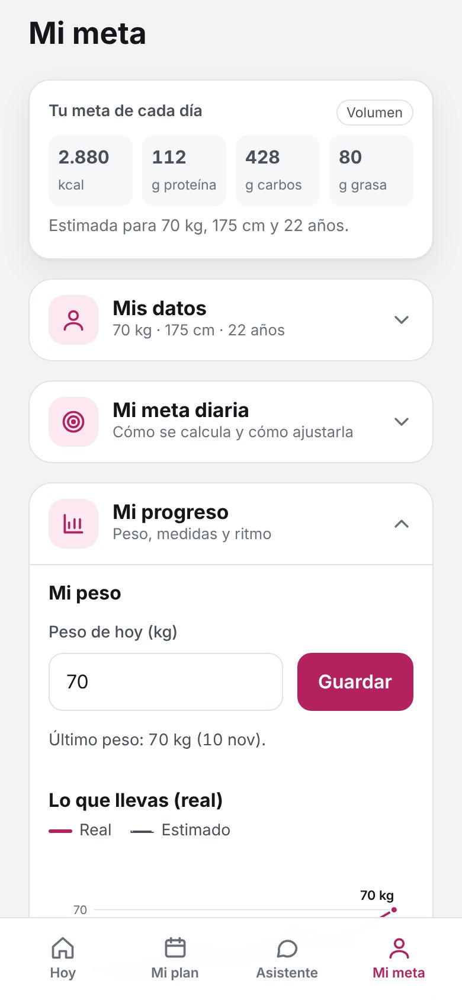

Cuenta tu comida sin complicarte.
Escribe lo que comiste como lo dirías: «dos panes con queso». Bocado calcula tus calorías, proteínas, carbohidratos y grasas, y te dice qué te falta para llegar a tu meta del día.
Gratis, sin crear cuenta. Lo que registras se queda en tu dispositivo.

Así funciona
Cuatro cosas, sin tablas ni pesas obligatorias.
Escribe lo que comiste
Pon «2 huevos sancochados, dos panes con queso y un jugo de naranja». Bocado separa cada alimento, estima la cantidad y te deja cambiar lo que no entendió bien.

Mira qué te falta hoy
Un anillo te muestra cuántas calorías te quedan. Debajo ves tu proteína, tus carbohidratos y tu grasa, y qué comidas del día ya registraste. Tu racha sube cuando registras el mismo día.
Recetas y plan de la semana
Más de 120 recetas con los valores calculados. Salen primero las que te ayudan a cubrir lo que te falta, y puedes guardar las tuyas. Dile a la app lo que no comes y no te las vuelve a sugerir.

Sigue tu progreso
Anota tu peso y mira dos gráficas: una con lo que registraste y otra con lo que se estima según tu meta. Así comparas cómo vas frente a lo esperado.

Instálala como una app
No necesitas tienda de aplicaciones. Se instala desde el navegador, ocupa muy poco y se abre desde el ícono de tu pantalla.
Android (Chrome)
- Toca el botón «Instalar en mi celular» de arriba.
- Si no aparece: menú ⋮ de Chrome → «Instalar app» o «Añadir a la pantalla de inicio».
- Confirma y busca el ícono de Bocado.
iPhone (Safari)
- Abre esta página en Safari.
- Toca Compartir (el cuadro con una flecha hacia arriba).
- Elige «Añadir a pantalla de inicio».
Computadora
Ábrela en Chrome o Edge. Si el navegador la ofrece, verás un ícono de instalar al final de la barra de direcciones.
Preguntas frecuentes
¿Es gratis?
Sí, por ahora es gratis.
¿Necesito crear una cuenta?
No. Bocado guarda lo que registras en tu propio dispositivo. Por eso, si borras los datos del navegador o cambias de teléfono, conviene usar la opción «Respaldo y datos» dentro de la app.
¿Funciona sin internet?
Una vez abierta o instalada, sí puedes ver y registrar tus comidas sin conexión.
¿Qué tan exactos son los valores?
Son aproximados. Los calculamos con una tabla de alimentos y cantidades estimadas, y cambian según la marca, la preparación y el tamaño de la porción. Las recetas vienen de internet y están adaptadas con los alimentos de la lista.
¿Reemplaza a un nutricionista o a un médico?
No. Bocado es una herramienta informativa. Si tienes una condición de salud, estás embarazada, o tienes alergias o antecedentes de trastornos alimentarios, consulta a un profesional antes de cambiar tu alimentación.
¿Quién puede usarla?
Personas mayores de 18 años.